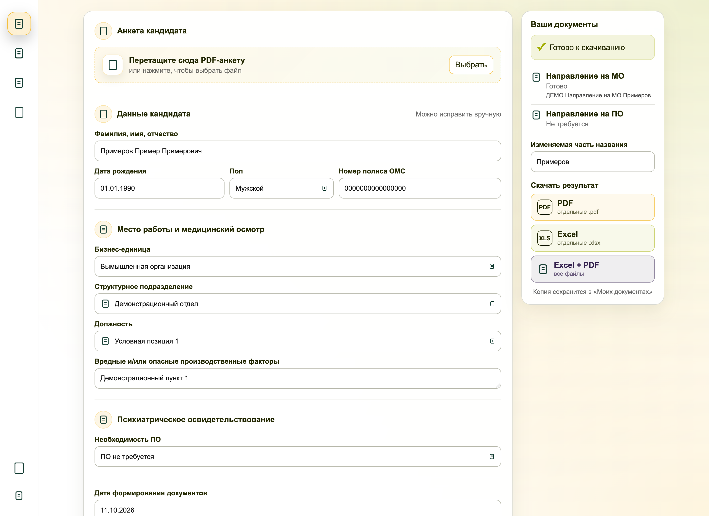
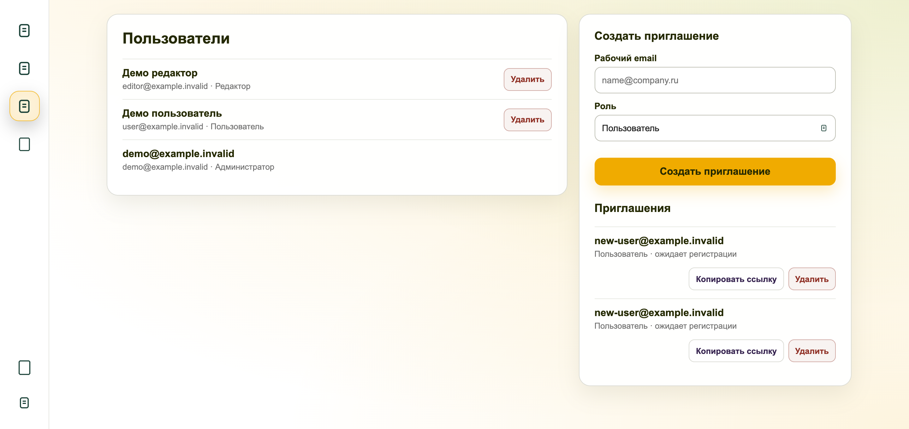

MEDFLOW / АВТОМАТИЗАЦИЯ ПОДГОТОВКИ ДОКУМЕНТОВ
Автоматическое оформление направлений на медосмотр
Medflow — серверное приложение для автоматизации подготовки направлений на медицинский осмотр и психиатрическое освидетельствование.
Приложение извлекает необходимые данные кандидата из PDF-анкеты. Пользователю остаётся выбрать бизнес-единицу, структурное подразделение и должность. На основании этих параметров система автоматически подставляет требования из Excel-справочника, заполняет шаблоны и формирует готовые документы в PDF, Excel или обоих форматах. При необходимости автоматически подобранные требования можно скорректировать вручную. Результаты сохраняются в личном архиве.
Работающая демоверсия · Проверено автоматическими тестами и вручную

01 / ЗАДАЧА
Избавиться от сложных Excel-формул и ручного оформления
Раньше направления оформлялись через Excel-шаблоны со сложными взаимосвязанными формулами. Поддерживать такие таблицы было неудобно: формулы могли нарушаться, а любые изменения требовали дополнительной проверки.
Данные кандидата приходилось переносить из анкеты вручную — отдельно фамилию, имя, отчество, дату рождения и другие сведения. После заполнения нужно было проверить документ, подготовить его к печати, вручную преобразовать Excel в PDF и только затем отправить кандидату.
Задача — объединить эти действия в одном приложении: исключить повторный ввод, автоматизировать подбор требований и формирование документов, сократить время оформления и вероятность ошибок.
02 / РЕШЕНИЕ
Как работает Medflow
Проверка и корректировка данных
Перед формированием документов пользователь может проверить и при необходимости скорректировать автоматически заполненные сведения: изменить перечень вредных и опасных производственных факторов, необходимость психиатрического освидетельствования и другие доступные параметры.
Все изменения применяются только к текущему направлению и не затрагивают исходный справочник.
Для публичной демонстрации используется отдельный запуск приложения с вымышленной организацией, условными должностями и специально подготовленными шаблонами. Реальные персональные данные, подписи и печати на странице не используются.

Управление пользователями и доступом
Приложение поддерживает многопользовательскую работу с разграничением прав доступа. Администратор создаёт приглашения, назначает роли и управляет учётными записями. Предусмотрены три роли: пользователь, редактор и администратор.
Обычный пользователь работает с направлениями и собственным архивом. Редактор дополнительно может обновлять справочник, а администратор управляет пользователями и доступом.
Проверка прав выполняется на сервере. Пароли хранятся в виде защищённых хэшей, операции изменения данных защищены CSRF-токенами, а при удалении учётной записи активные сеансы аннулируются.

03 / ИНЖЕНЕРИЯ
Ключевые решения при разработке
04 / АДАПТАЦИЯ
Варианты развёртывания и адаптации
05 / РЕЗУЛЬТАТ
От анкеты кандидата до готового направления
Полноценное работающее приложение заменяет многоэтапное оформление документов в Excel единым и понятным процессом.
Вместо ручного переноса данных, сложных формул, заполнения шаблонов и преобразования файлов пользователь загружает анкету, выбирает необходимые параметры, при необходимости корректирует автоматически подобранные требования и получает готовые направления в нужном формате.
Основной результат — сокращение ручных операций, упрощение оформления и снижение риска ошибок. Приложение развёрнуто на сервере, поддерживает многопользовательскую работу и сохраняет сформированные документы в личных архивах.

Проверка работоспособности
Работа приложения проверена автоматическими тестами и серией ручных функциональных проверок.
Протестированы извлечение и корректировка данных, выбор параметров из справочника, формирование PDF и Excel, скачивание документов и работа личного архива. Содержимое созданных документов сверялось с исходными данными.
Отдельно проверены регистрация по приглашениям, управление пользователями, разграничение прав и ограничения доступа к административным функциям.
Все основные операции выполняются программно по заданным правилам, без использования языковых моделей.
06 / ТЕХНОЛОГИИ